Created: 20/07/2014
By: Alex Gurghis
Email: Alex Gurghis
Informations about Updates and New Themes are always announced on Twitter and Facebook. Twitter updates are usually more up to date, Facebook updates are more detailed and easier to follow :)
Hello! First of all I would like to thank you for purchasing my theme! :)
This file will teach you how to set up and use the “WPJobus” WordPress Theme.
This file is really extensive so you might think the theme is hard to use,
actually its not, you probably just might jump to the options page and explore everything yourself, this file is more of a reference work if you do not know what to do, or if you are not familiar to WordPress.
Have fun with your new theme! best regards
Alex Gurghis
The Theme is built with WordPress best practices in mind, therefore it makes heavy use of the WordPress template engine. What exactly does that mean?
Whenever you see a php function call like this within your php files (get_header(), get_footer() or get_sidebar() ) the theme retrieves a reusable code snippet, most of the time a chunk of code that is used in many different files.
Apart from the php structure the theme uses a lot of modern CSS3 features, most notably the power of media queries to serve different layouts for different viewport sizes. If you use a modern browser (IE9 +, Chrome, Safari, Firefox) and resize your browser window you will realize that the theme adapts its size to the viewport.
Step #1
You can either choose to upload the theme to your server via FTP (only upload the unzipped folder „WPJobus“ into the folder wp-content/themes/ ) or via WordPress upload function. To use the upload function of the WordPress admin panel make sure to ONLY upload the “WPJobus” folder and not the whole archive file that you received by ThemeForest.
After the theme activation you'll see an info box about installing some plugins:
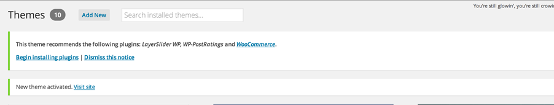Click on the "Begin Installation" button.
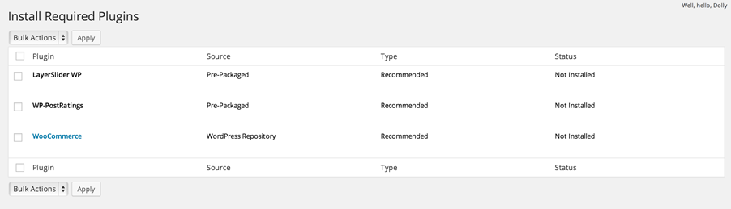To get all the features you see on our demo, make sure you install all the plugins.
Go to Dashboard -> Options (see 1 in the bellow picture) -> Import (2) -> Import from file (3). Go to "Demo content" folder, open "redux.json" file in "ReduxFramework Settings" with a text editor, copy everything inside it and paste in the import field. Click import (4).
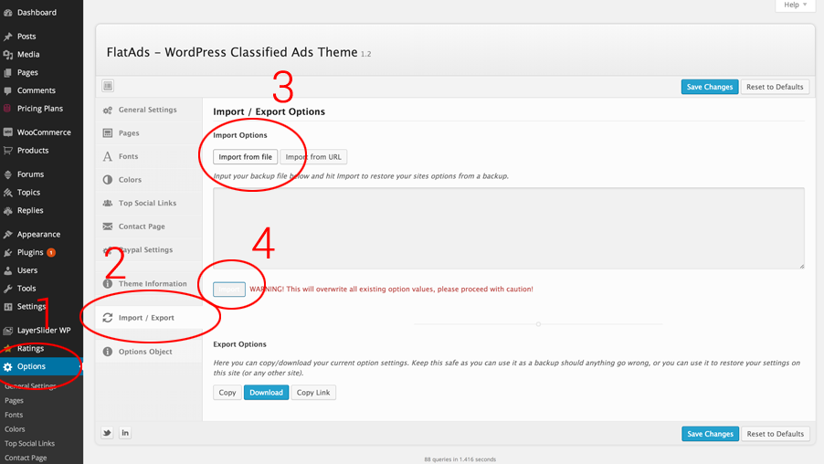Go to dashboard -> LayerSlider WP -> On import block select the file located in Demo Conent/LayerSLider Demo Content folder and click "Import"
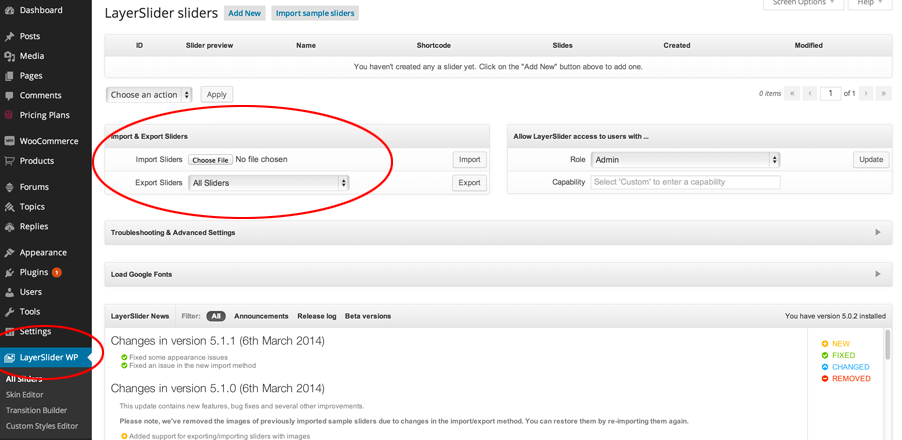If you are new to wordpress or have problems creating posts or pages that look like the theme preview you can import dummy posts and pages here that will definitley help to understand how those tasks are done. Go to Dashboard -> Demo Content and click on "Import Dummy Content". Please wait a few seconds and dont reload the page. You will be notified as soon as the import has finished!
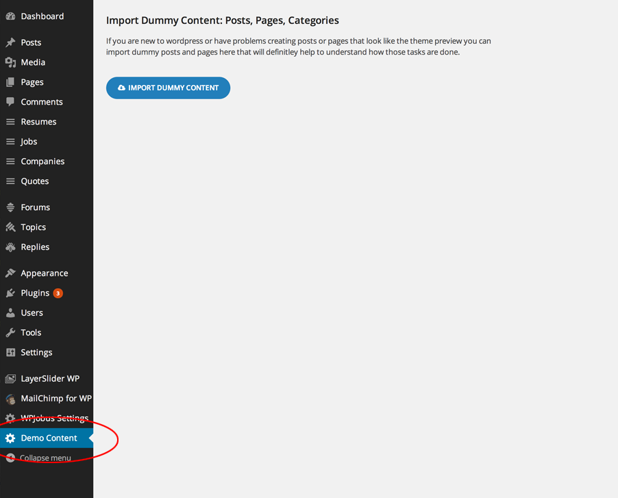If you want to change the general Options of the Theme open the “WPJobus” Theme Options Panel (located in your admin sidebar) and click it, you will notice several tabs with options, which we will discuss now one by one.
Here you will add the logo, favicon and google analitycs id, google map styles.
Here you will add industries. Will setup the publish state (pending review or publish).
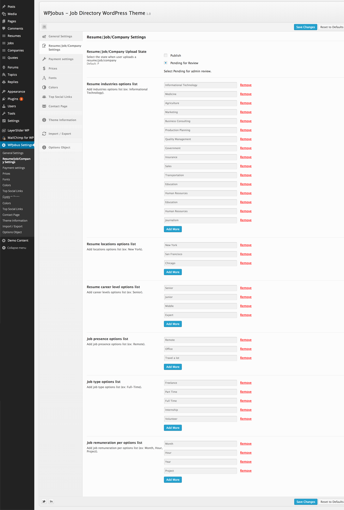Here you will setup the stripe payment settings.
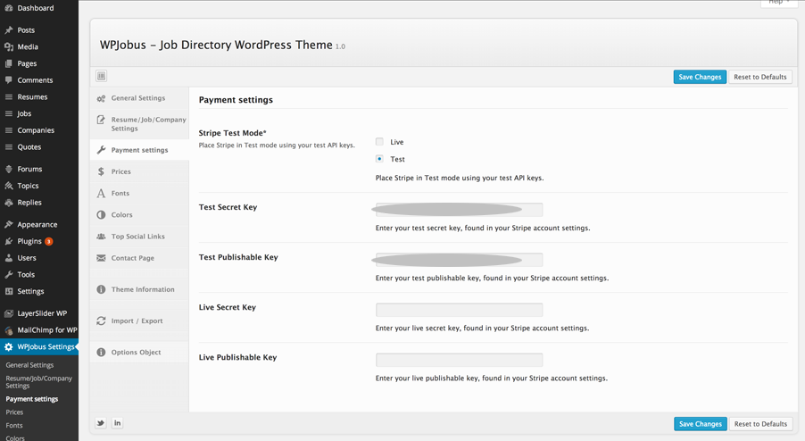Here you will setup the prices for each category. Leave empty for free but for featured empty means no feature option available. Also you will can setup the feature available time. After expiration it becomes regular (free).
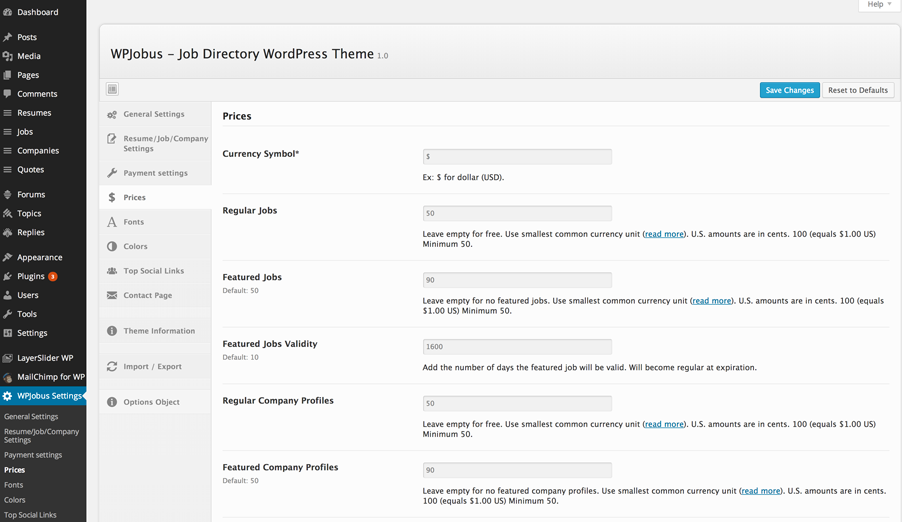Here you can change the font. Ther are available 650+ Google fonts.
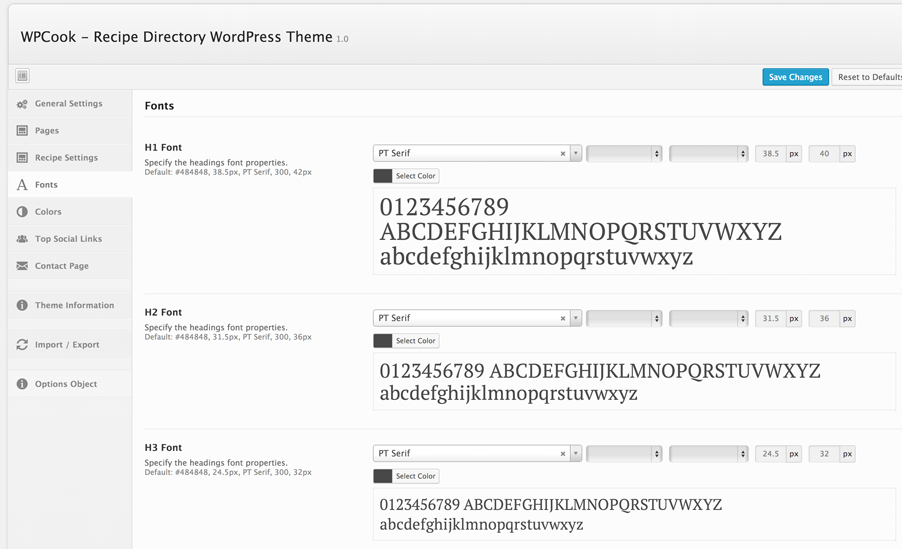Here you can change the colors. Choose from the existing color scheme presets or create your own!
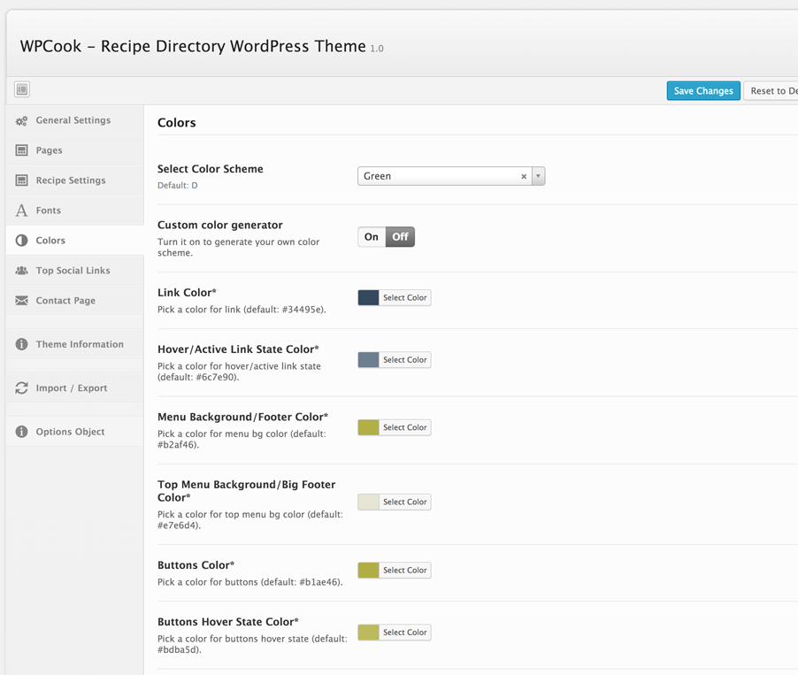Here you can add the social links.
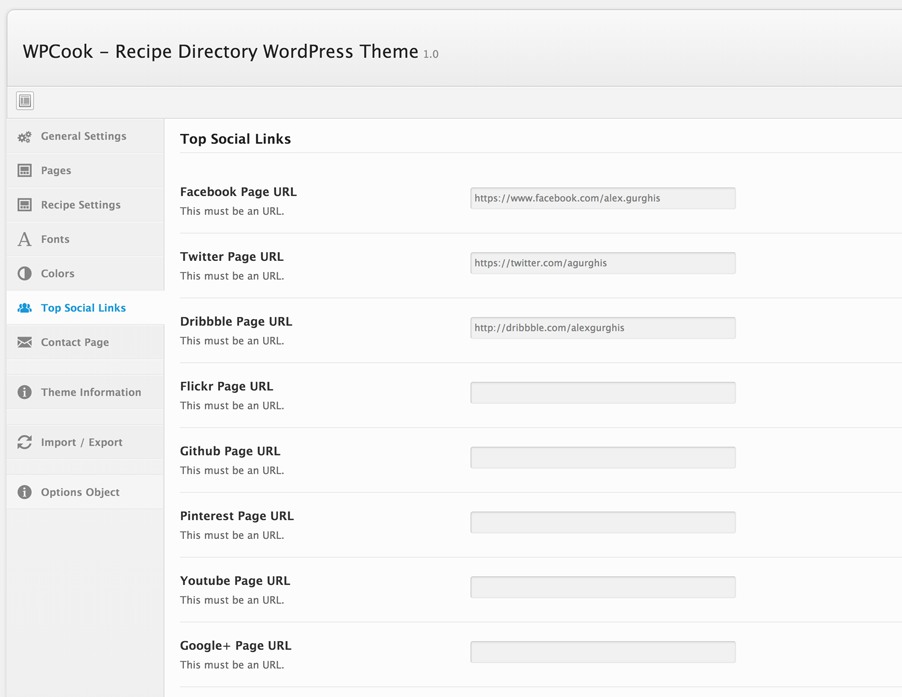Here you can asetup the contact page.
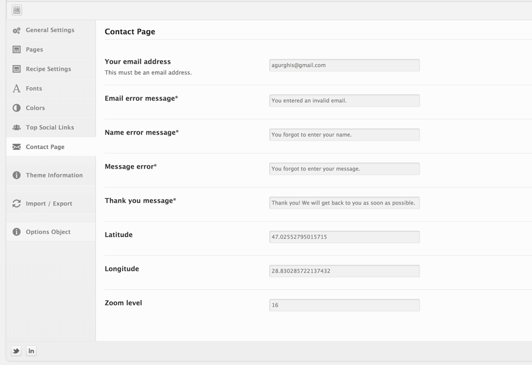The Theme uses valid HTML and comes with predefined classes for common elements needed in web design.
All templates share basic elements like header, footer, main, and entry so be carefull when editing those or adding/changing the CSS for those ids and classes :)
The CSS for the theme is split into various files: one that holds the basic markup for layout which is called style.css.
The theme uses advanced jQuery functions. You do not need to know how to use jQuery to activate them, almost everything is controlled by WordPress. All the function calls as well as as the custom created jQuery plugins are located in the custom.js file.
Once again, thank you so much for purchasing this theme. As I said at the beginning, I'd be glad to help you if you have any questions relating to this theme. No guarantees, but I'll do my best to assist.
Alex Gurghis